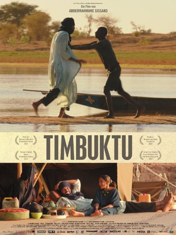

#9997 Timbuktu *OmU*
Auszeichnungen: für 1 Oscars nominiert
 
 IMDB-Wertung: 7.2 / 10
IMDB-Wertung: 7.2 / 10  Metascore: 92
Metascore: 92 
Timbuktu, Mali: Islamistische Fundamentalisten haben die Oasenstadt übernommen und die religiösen Gesetze der Sharia eingeführt. Das Leben unterliegt einem strengen Reglement. Die Menschen dürfen nicht mehr rauchen, nicht mehr musizieren und nicht mehr Fußball spielen; die Frauen werden gezwungen, sich zu verschleiern und auf dem Markt Handschuhe zu tragen. In einem Zelt, nicht weit von der Niederlassung der mit grausamer Brutalität über die Stadt herrschenden Islamisten, wohnt der Beduine Kidane zusammen mit seiner Frau Satima, seiner Tochter Toya und einem 12-jährigen Hirtenjungen. Zunächst lebt die Familie in Ruhe, hält Distanz zu den Extremisten. Doch dann begeht Kidane einen Fehler und tötet nach einem Streit den Fischer Amadou, weil der seine liebste Kuh schlachtete. Von nun an bricht der islamistische Terror auch über den Alltag der friedliebenden Familie herein.
Frazösisch mit dt. Untertiteln
Jahr: 2014
Dauer: 96 Minuten
FSK: 12
Land: Mauretanien Studio: Arsenal FilmverleihTonspuren:
Untertitel: Deutsch,
Auflösung: 1080p (1920x800) Größe: 2570 MB
Genre: Drama
Regisseur: Abderrahmane Sissako
Drehbuch: Abderrahmane Sissako, Kessen Tall
Soundtrack: Amin Bouhafa
Darsteller:
- Ibrahim Ahmed als Kidane
- Abel Jafri als Abdelkerim
- Toulou Kiki als Satima
- Mehdi A.G. Mohamed als Issan
- Kettly Noël als Zabou
- Fatoumata Diawara als La chanteuse
- Layla Walet Mohamed als Toya
- Hichem Yacoubi als Djihadiste
- Adel Mahmoud Cherif als L'Imam
- Salem Dendou als Le chef djihadiste
- Mamby Kamissoko als Djihadiste
- Yoro Diakité als Djihadiste
- Cheik A.G. Emakni als Omar
- Zikra Oualet Moussa als Tina
- Weli Cleib als Juge
- Djié Sidi als Juge
- Damien Ndjie als Abu Jaafar
Datei: X:\2014(N-Z)\Timbuktu OmU (2014, FSK12, 1920x800).mkv seit 15.11.2018
Festplatte: HD 2013(I-Z)-2014(A-Z)
 Es gibt insgesamt 163 Filme in der Gruppe '2014(N-Z)'
Es gibt insgesamt 163 Filme in der Gruppe '2014(N-Z)'